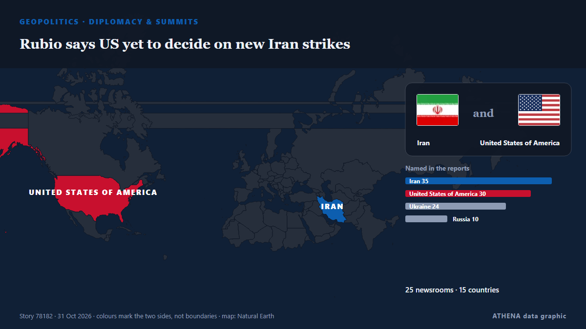

Rubio says US yet to decide on new Iran strikes

ATLANTA: US President Donald Trump has not made a decision about fresh strikes on Iran amid stalled peace talks, US Secretary of State Marco Rubio said Saturday. von Business Recorder
Unabhängig gemeldet von 25 Medien in 15 Ländern seit dem 28. Okt., zuerst von The Maritime Executive; die Berichterstattung flaut ab. ATHENA stuft das Risiko als hoch ein (6.5/10), vor allem wegen der Schwere des beschriebenen Schadens und seiner geografischen und sektoralen Reichweite. Die Konfidenz liegt bei 91 % (hoch): 25 Medien bestätigen es unabhängig, bei einer mittleren Verlässlichkeit der Quellen von 78 %. Medien nach Land: Vereinigte Staaten (6), Aserbaidschan (5), Russland (5). Berichterstattung: 28. Okt. bis 31. Okt., 74 Stunden.
Warum es wichtig ist: Sicherheits- und diplomatische Entwicklungen können Bündnisse, Handel und Märkte weit über die direkt beteiligten Länder hinaus verschieben.
Was sich geändert hat: 28 neue Berichte von 17 Redaktionen in den 24 Stunden bis 31. Okt..
Erste Schlagzeile: Secretary of State Marco Rubio at the G20 Foreign Ministers’ Meeting Welcome Reception
Schlagzeilen werden auf Englisch angezeigt, wie veröffentlicht.
Auf einen Blick
Ausgewählt, bewertet und geschrieben nach der veröffentlichten Methodik von ATHENA. Kein Redakteur greift in einzelne Ereignisse ein. So entsteht ATHENA ›
| 28 Oct 19:21 UTC | 1 |
|---|---|
| 28 Oct 22:21 UTC | 0 |
| 29 Oct 01:21 UTC | 0 |
| 29 Oct 04:21 UTC | 0 |
| 29 Oct 07:21 UTC | 0 |
| 29 Oct 10:21 UTC | 0 |
| 29 Oct 13:21 UTC | 0 |
| 29 Oct 16:21 UTC | 1 |
| 29 Oct 19:21 UTC | 0 |
| 29 Oct 22:21 UTC | 1 |
| 30 Oct 01:21 UTC | 0 |
| 30 Oct 04:21 UTC | 1 |
| 30 Oct 07:21 UTC | 2 |
| 30 Oct 10:21 UTC | 0 |
| 30 Oct 13:21 UTC | 0 |
| 30 Oct 16:21 UTC | 1 |
| 30 Oct 19:21 UTC | 2 |
| 30 Oct 22:21 UTC | 0 |
| 31 Oct 01:21 UTC | 0 |
| 31 Oct 04:21 UTC | 3 |
| 31 Oct 07:21 UTC | 0 |
| 31 Oct 10:21 UTC | 2 |
| 31 Oct 13:21 UTC | 4 |
| 31 Oct 16:21 UTC | 17 |
| 31 Oct 19:21 UTC | 1 |
| 31 Oct 15:58 UTC | 0.0 |
|---|---|
| 31 Oct 17:39 UTC | 2.1 |
| 31 Oct 18:40 UTC | 4.5 |
| 31 Oct 18:51 UTC | 5.5 |
| 31 Oct 18:53 UTC | 7.0 |
| 31 Oct 22:11 UTC | 6.5 |
| 31 Oct 22:11 UTC | 6.5 |
Warum diese Zahlen
Bedeutung
Risiko
Konfidenz
Die Berichterstattung – wer berichtete, und wann
Schlagzeile wie veröffentlicht · öffnet das Original- The Maritime Executive · Vereinigte StaatenAs Midterms Approach, Signs of Impending Return to Open Conflict With Iran
- The Hill · Vereinigte StaatenEconomy, healthcare, Iran war top voters' concerns ahead of midterms: Gallup
- The Jerusalem Post · IsraelSaudis ask Trump to 'give diplomacy a chance' on Iran prior to military option, sources tell 'Post'
- City A.M. · Vereinigtes KönigreichAs it happened: FTSE 100 loses steam; oil up as US considers Iran strikes
- NPR World · Vereinigte StaatenAfter monthslong pause, U.S. could renew conflict with Iran after midterms
- New York Times Business · Vereinigte StaatenWhy the Markets Don’t Care About the Midterms
- Tehran Times · IranTrump’s falling popularity hangs over a midterm vote shaped by Iran war, inflation
- Atlantic Council · Vereinigte StaatenUkrainians are not fighting for Zelenskyy. They are fighting for national survival.
- Türkiye Today · TürkeiTurkish FM Fidan meets Rubio as Zelenskyy prepares for Türkiye visit
- APA (English) · AserbaidschanFactor that could prompt Trump to resume war against Iran revealed
- Türkiye Today · TürkeiBad midterms could push Trump toward major Iran strike: Report
- Arab Times · KuwaitPoor Midterm Results Could Trigger Major Trump Strikes on Iran: Report
- Express Tribune · PakistanTrump says Russia-Ukraine deal could be near ahead of December’s G20 summit
- APA (English) · AserbaidschanUkrainian President Zelenskyy visits Türkiye
- APA (English) · AserbaidschanTurkish President received Ukrainian President
- APA (English) · AserbaidschanTrump does not rule out signing of Russia-Ukraine peace agreement at G20 summit
- The Jerusalem Post · IsraelIsrael prepares for possible Iran escalation as US delays military action until after midterms
- Ukrainska Pravda (English) · UkraineZelenskyy and Erdoğan discuss involving Türkiye in negotiations to end war
- Business Recorder · PakistanRubio says US yet to decide on new Iran strikes
- Haaretz (English) · IsraelTrump yet to decide on Iran strikes, U.S. open to diplomacy, Rubio says
- Ukrainska Pravda (English) · UkraineRubio says Zelenskyy may be invited to G20 summit
- The Jerusalem Post · IsraelTrump 'has not made a decision' on Iran, Rubio tells press
- Anadolu Agency (English) · TürkeiRubio says Iran talks have never stopped, stresses US preference for diplomacy
- Kurdistan24 (English) · IrakUS Secretary of State: No Decision on Iran Strikes
- Al-Monitor · Vereinigte StaatenUS, Canada see growing interest in limited ceasefire in Black Sea
- TASS (English) · RusslandTrump to decide later on whether to invite Zelensky to G20 summit — Rubio
- TASS (English) · RusslandTurkey submits Black Sea grain shipping proposals to US — Rubio
- Asharq Al-Awsat (English) · Saudi-ArabienRubio Says US Yet to Decide on New Iran Strikes
- Vanguard · NigeriaUS yet to decide on new Iran strikes, says Rubio
- TASS (English) · RusslandRubio, Lavrov discuss possible Putin-Trump meeting on APEC sidelines
- Kyiv Independent · Ukraine'I don't know if negotiated peace is achievable,' Rubio says as uncertainty hangs over Russia-Ukraine talks
- TASS (English) · RusslandUS not claiming negotiated Ukraine settlement anywhere close — Rubio
- TASS (English) · RusslandTrump considers Russia’s participation in G20 discussions important — Rubio
- APA (English) · AserbaidschanUS Secretary of State: Trump made no decision to resume war with Iran
- Yonhap (English) · SüdkoreaTrump open to talks with N. Korean leader but no meeting scheduled: Rubio
- Free Malaysia Today · MalaysiaRubio says US yet to decide on new Iran strikes